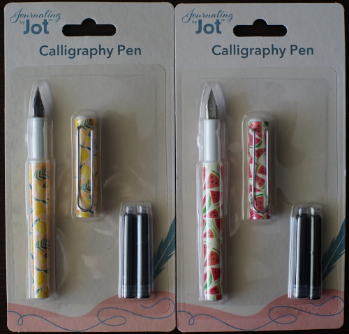
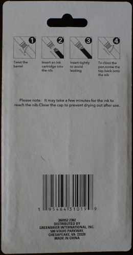
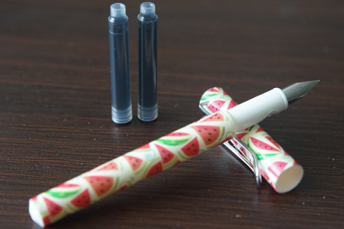
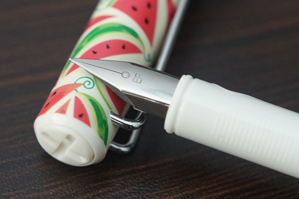
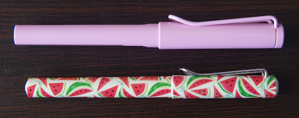
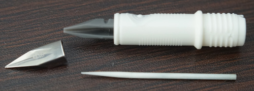
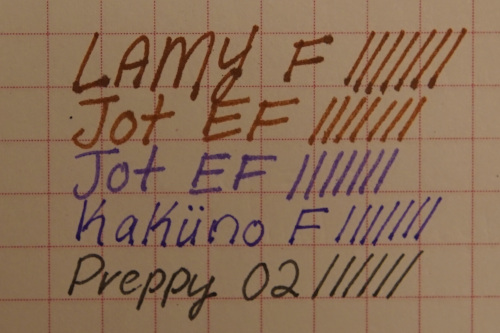

I have been stalking Dollar Tree for a while now looking for the elusive "Jot Glass Pen". While I have yet to find it, I found a box of "calligraphy pens". They had 3 different styles: palm leaves, watermelon, and lemon. All had EF nibs. The receipt, but not the box, says .5mm. I can't imagine anyone doing calligraphy would choose this width, but okay.
 I asked Ryan and hors which they wanted and bought 1 watermelon, 2 lemons.
The grip section is very strange and uncomfortable. Despite having embossed lines where your fingers go, it's slippery and hard to grasp. There is a circular grip for your index finger and horizontal lines for your thumb. There are no lines on the bottom side.
Pen enthusiasts will immediately recognize this design as that of a LAMY Safari. Luckily, I own a Safari now, so I can provide a comparison!
The Jot pen is much smaller than the Safari. However, the cap is definitely a design replica. Not only is the clip very similar, the X in the cap matches. There is no hole in the center of the X. The cap feels wobbly going on, but seems to be secure. The Safari's o-ring to keep the cap secure is not in this design.
The cartridge opening appears to match LAMY's proprietary cartridges. They are shaped differently and unlabeled. Edit: This cartridge does not fit in the Safari, while the Safari cart does fit in this pen.
The barrel is not shaped like Safari. There are 2 small holes in the bottom so avoid eyedroppering this for your own good.
Digging further in, I removed the nib using the scotch tape method. This pen is actually felt fed, like the Pilot Petit1. I didn't attempt to remove the feed from the section. It is set inside like the Safari.
I did not try the included ink. I did spill it all over my hand however! The stain disappeared in less than 24 hours on my palm. Is it actually fountain pen ink? Only god knows.
The nib appears to be the same thickness as LAMY F. I must wonder what world this thickness is EF, but the answer is clearly "America". The nib looks more finished than the Petit1 nib and not as finished as the LAMY nib. I do not believe the nibs are swappable with LAMY, but I have yet to try.
The pen dries out quickly. I don't think the cap is airtight. The grip is awful and uncomfortable. I have hands on the smaller side and it is still too small and the embossed lines don't help much. It's fun to own but not fun to use.